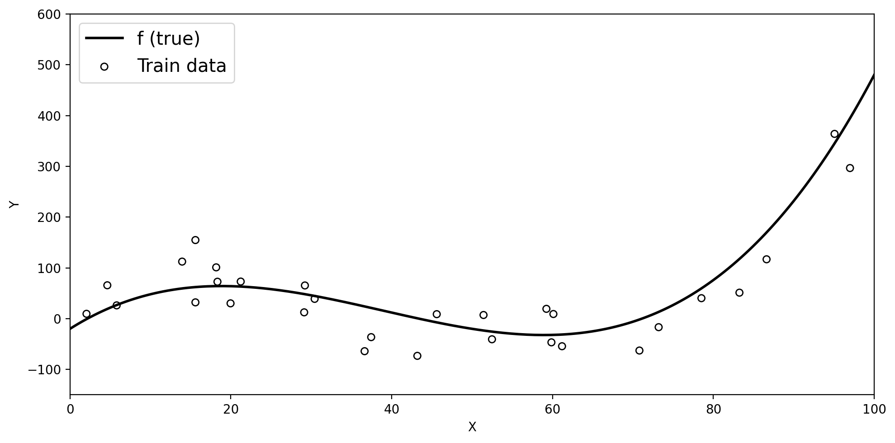
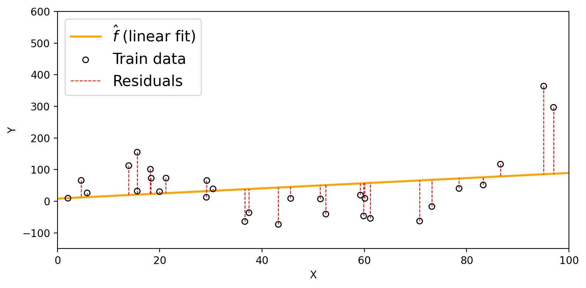
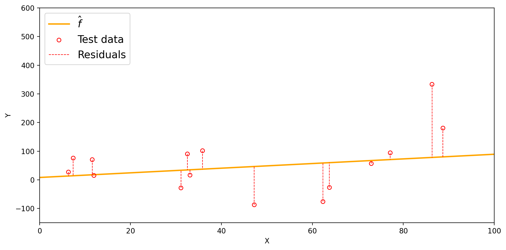
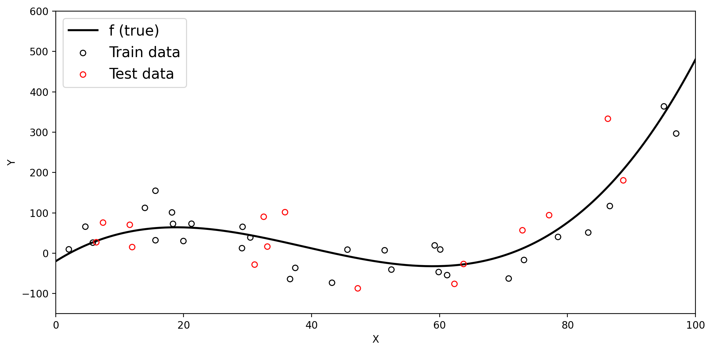
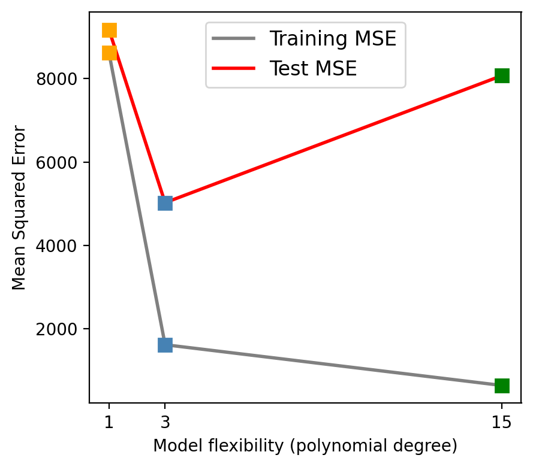
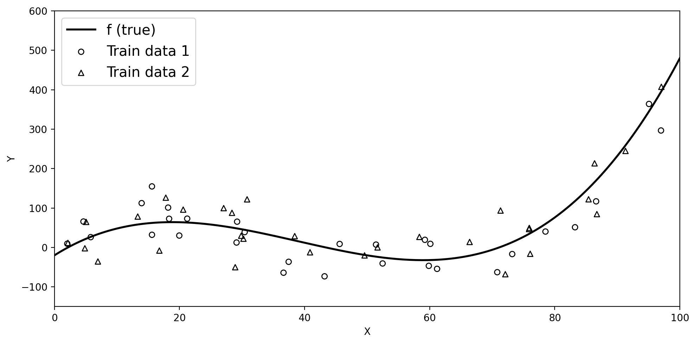
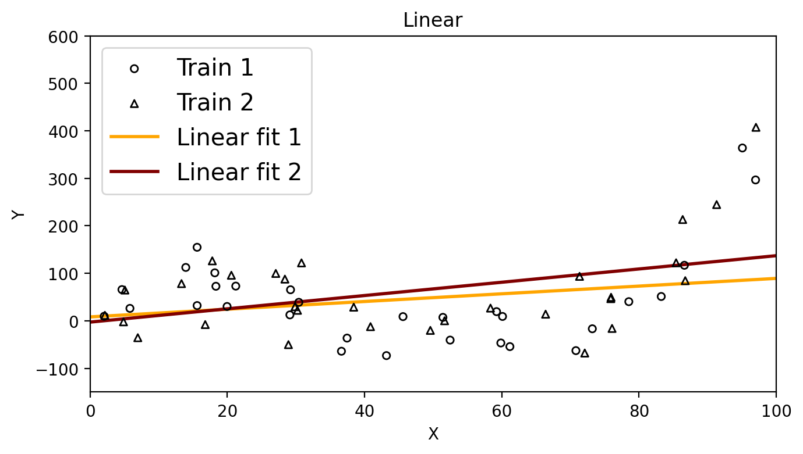

How do we know if \(\hat{f}\) is any good?

EDS 232
Lesson 3
Training and test errors, and model flexibility
In this lesson
Notation recap
We have a training set of \(n\) observed data points:
\[\{(x_1, y_1),\, \ldots,\, (x_n, y_n)\}\]
We assume \(f\) is the unknown true function, so \(f(x_i) = y_i\).
We train a model on these data points to obtain an estimate \(\hat{f}\).
How do we know if \(\hat{f}\) is any good?
Mean Squared Error
–
Mean Squared Error (MSE)
To evaluate the performance of a model on a given data set, we need some way to measure how well its predictions match the observed data.
For regression, the most common way to measure how close \(\hat{f}\) is to the truth is the
Mean Squared Error (MSE)
To evaluate the performance of a model on a given data set, we need some way to measure how well its predictions match the observed data.
For regression, the most common way to measure how close \(\hat{f}\) is to the truth is the mean squared error (MSE):
\[\text{MSE} = \frac{1}{n} \sum_{i=1}^n (y_i - \hat{f}(x_i))^2\]
When computed on the training set, this is called the training MSE.
Training data and true \(f\)
Below we have simulated train data based on the true underlying function \(f\) (black line).

Visualizing the training MSE
We fit a linear model to the training data and obtain the estimate: \(\hat{f}(x)=\) 0.81x + 8.25.
The residuals (dashed red lines) show the difference between each \(y_i\) and \(\hat{f}(x_i)\).
Using these we calcualte the train MSE for this \(\hat{f}\) to be 8614.9.

Test data and the test MSE
Check-in
If you were going to take a final exam, how would you prefer the instructor to create the questions?
Test data
A model will generally perform better when evaluated on the data it was trained on.
But in most cases, we want to use our model to make predictions on previously unseen data.
Test data is data that is not part of the training dataset, used to evaluate how well our model generalizes to previously unseen observations.
When we have enough data, we divide our observations into two groups:
Training set: used to fit the model and estimate \(\hat{f}\)
Test set: held out until after training, used only to evaluate performance
Splitting observations into train and test sets

Test MSE
When we compute the MSE on the test data, we get the test MSE.
We generally care much more about the test MSE than the training MSE.
Check-in: Intuitively, what do you expect to be larger: the training MSE or the test MSE?
Visualizing the test MSE
Our linear model \(\hat{f}(x)=\) 0.81x + 8.25 has the following residuals on the test set, with a test MSE of 9169.18.

Overfitting
Overfitting
One instance in which it is useful to calcualte both the train MSE and the test MSE is to understand when a model is overfitting.
Overfitting
One instance in which it is useful to calcualte both the train MSE and the test MSE is to understand when a model is overfitting.
We say a model is overfitting when it has a:
“Our learning procedure is working too hard to find patterns in the training data, and may be picking up some patterns that are just caused by random chance rather than by true properties of \(f\).” (James et al. 2023)
Remember our train and test sets

Three models for the same training data
Check-in: Which model do you think will have the lowest training MSE? The lowest test MSE?
Training MSE vs. test MSE

As flexibility increases, the training MSE decreases…
…but the test MSE may go back up!
Check-in: Which model is overfitting, and why?
Does a better fit on the training data always indicate good performance on unseen data?
Models predictions on the test set
The degree 15 polynomial has the lowest training MSE but fails to capture the trend in the test data.
The bias-variance tradeoff
Model variance
Model variance is how much \(\hat{f}\) would change if we trained it on a different dataset drawn from the same population.
High-variance model: very sensitive to the specific training data: a small change in the data produces a very different \(\hat{f}\)
Low-variance model: relatively stable across different training sets
Suppose we collect a second training set

Both datasets come from the same true \(f\) but differ due to random noise.
High vs. low variance


Check-in: Which method has higher variance,
the linear model or the degree 15 polynomial? Why?
Model bias
Model bias is the error introduced by the assumptions built into the model.
High-bias model: its assumptions are too restrictive to capture the true shape of \(f\): it will be systematically wrong no matter how much data we give it
Low-bias model: flexible enough to approximate the true shape of \(f\)
Example: if the true \(f\) is cubic but we fit a linear model, the linear model simply cannot capture the true shape, it will always be biased.
The bias-variance decomposition
Roughly speaking and from a theoretical perspective, the expected test MSE decomposes as:
\[\text{Expected test MSE} = \underbrace{\text{Model variance}}_{\text{sensitivity to training data}} + \underbrace{\text{Model bias}^2}_{\text{systematic error}} + \underbrace{\text{Irreducible error}}_{\text{Var}(\epsilon)}\]
The irreducible error \(\text{Var}(\epsilon)\) is always present and positive, it sets a lower bound on the test MSE
Model variance and bias are non-negative and thus contribute to the MSE, but depend on the model we choose.
To minimize the expected test MSE, we need both low variance and low bias.
The bias-variance tradeoff
“As we use more flexible methods, the variance will increase and the bias will decrease. The relative rate of change of these two quantities determines whether the test MSE increases or decreases.” (James et al. 2023)
“The challenge is finding a method for which both the variance and the squared bias are reasonably low.” (James et al. 2023)

From degree 1 → 3: bias drops faster than variance rises, so test MSE falls.
From degree 3 → 15: variance rises faster than bias drops, so test MSE climbs back up.
Recap
The training MSE measures how well \(\hat{f}\) fits the training data, but we care more about the test MSE because we want to know how our model performs on unseen data.
A model that fits training data too closely may overfit: low training MSE, high test MSE
Model variance measures how sensitive \(\hat{f}\) is to the specific training set used
Model bias measures systematic error from restrictive model assumptions
The bias-variance tradeoff: more flexible models generally have lower bias but higher variance
The challenge is finding a model where both variance and bias are reasonably low.
References